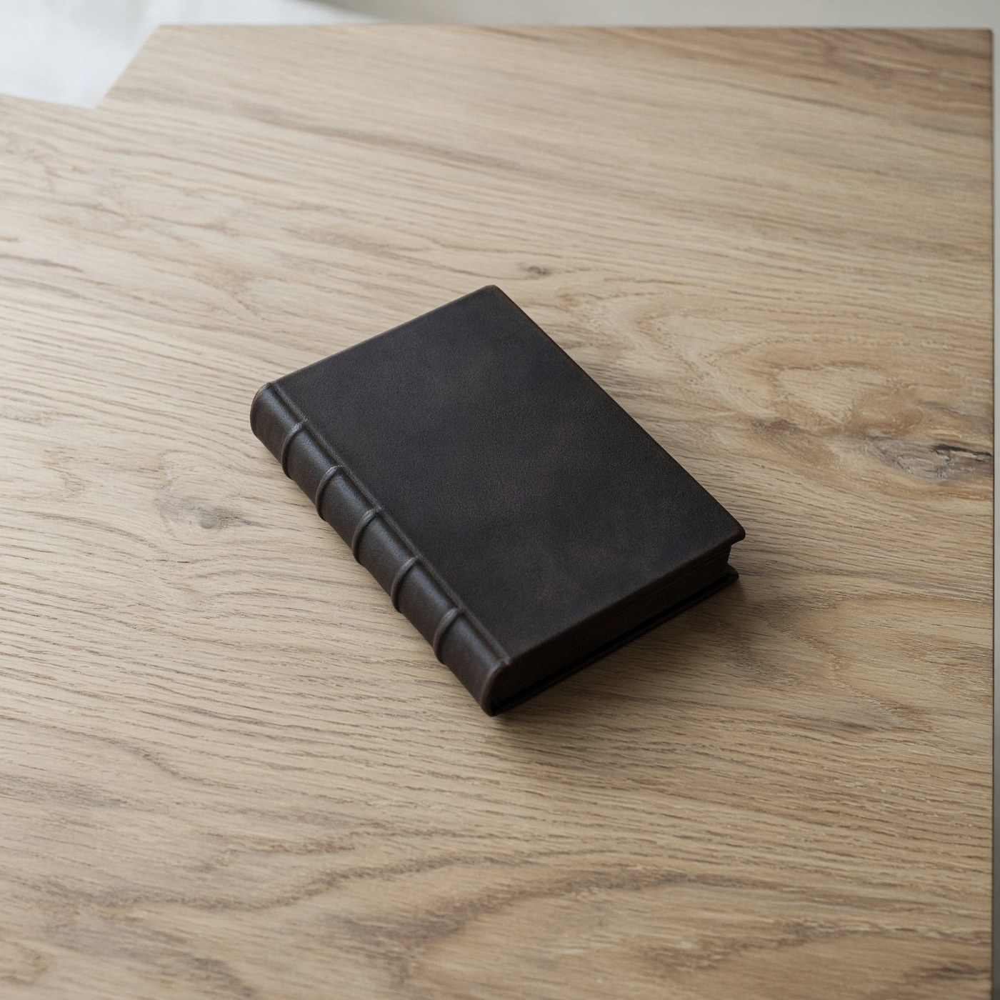
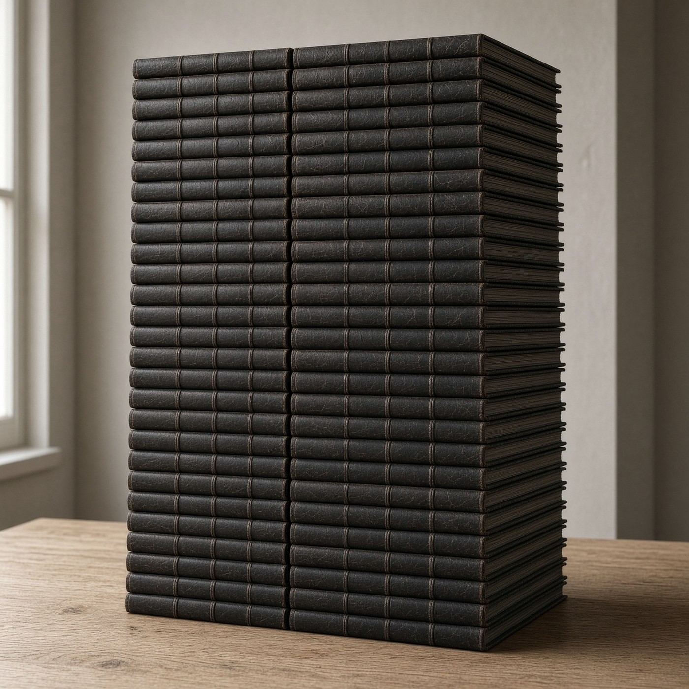
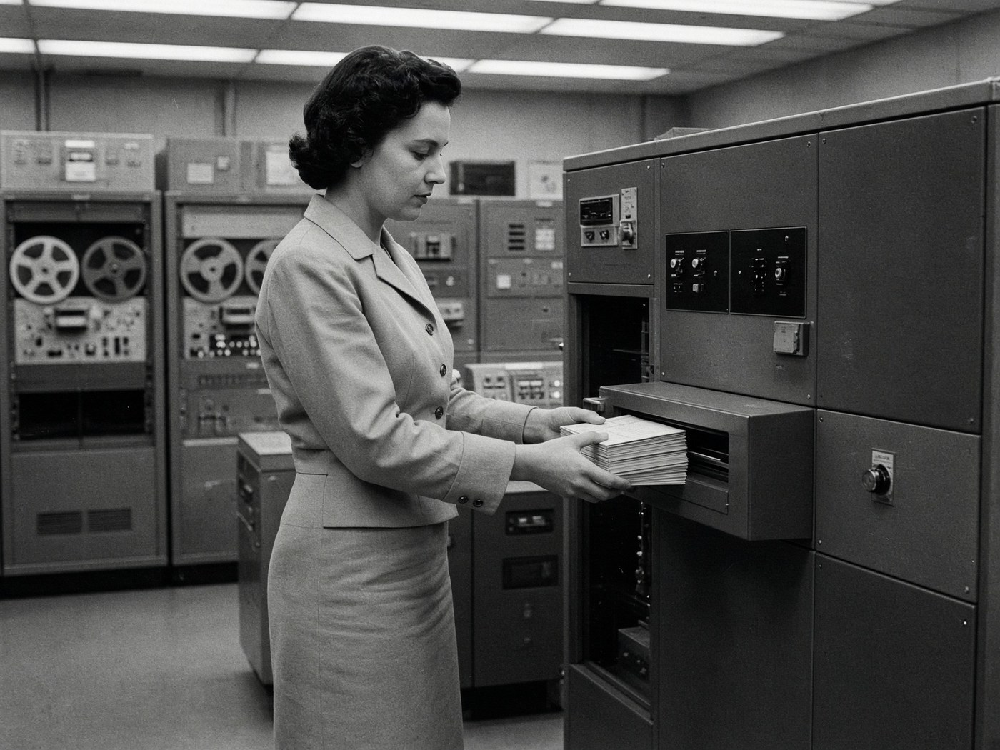
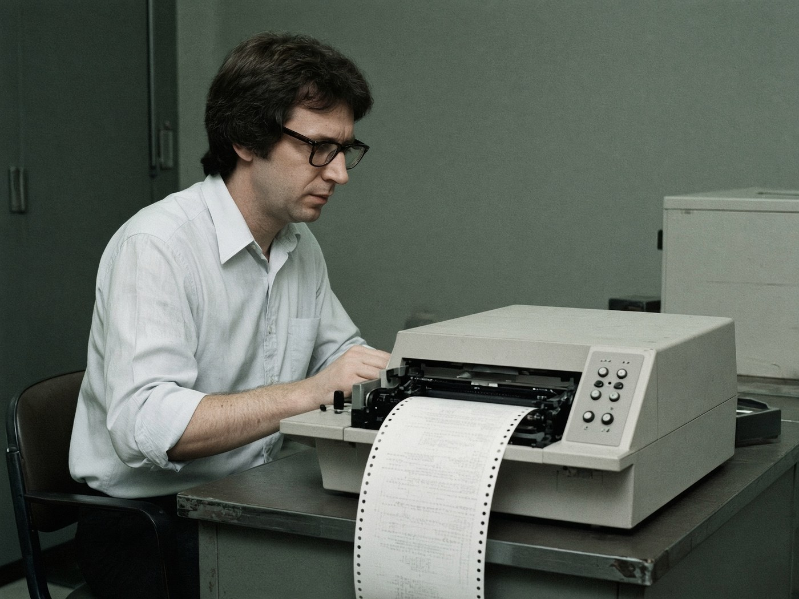
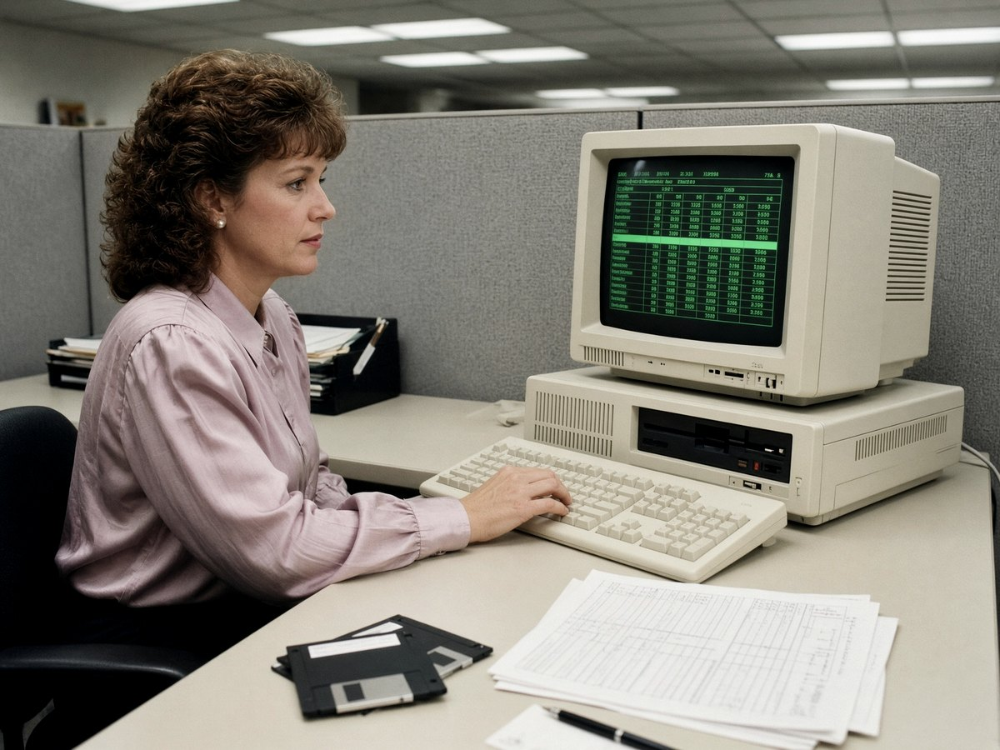
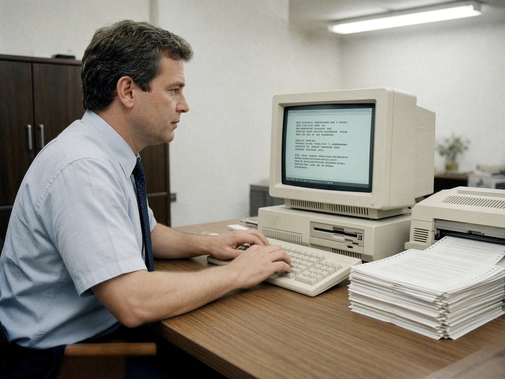
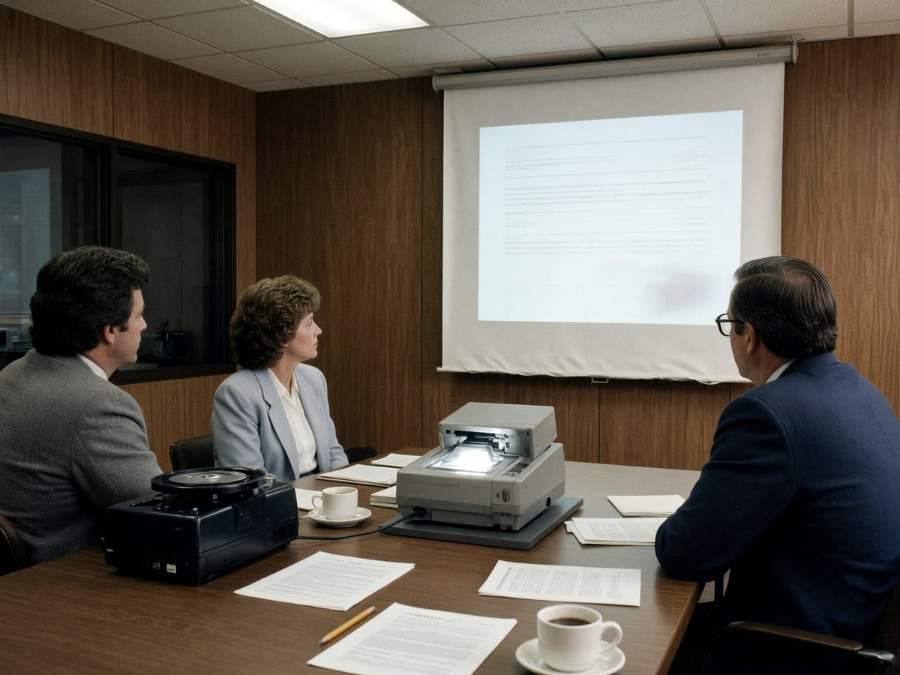
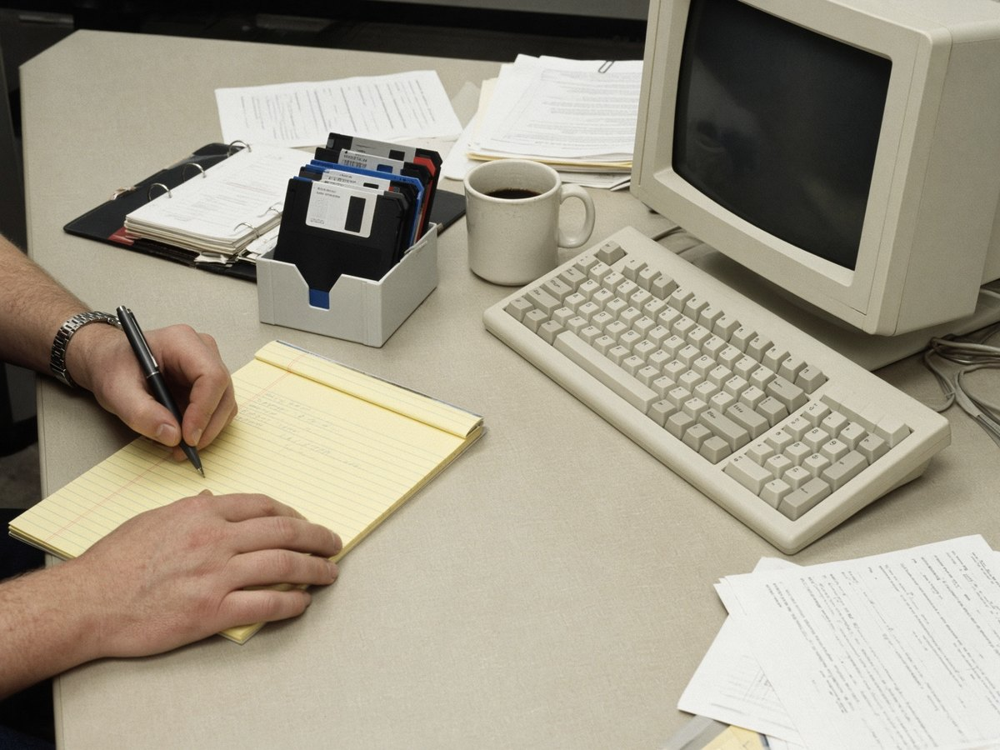

02
Before the printing press
Scribes used a feather to copy every book by hand. A Bible took about a year.
The primitive unit of knowledge and memory for AI
Prims are files for AI + Human collaboration.
01

Please join us for three minutes.
As we journey into Prims, a brand new file system necessary for the AI age.
To understand why AI and humans need Prims, not PDFs, we have to understand why the printing press needed movable type, not feathers.
02
Scribes used a feather to copy every book by hand. A Bible took about a year.
03
Mainz, 1455. A press could create in a day what a monk copied in months. Not a new kind of book. A different rate of making them.
The press didn’t use a feather.
04
By 1500, fifty years of print, Europe had more than nine million books.


05
A feather was for human hands to write every letter. A press was for human hands to press a page.
How will AI change how humans interact with data?
Knowledge work is a factory. Raw material in, finished idea out. Since Turing described a machine that could compute anything, a person sat with it and did that conversion. The tools changed. The factory did not.

1940s–50s
Punch cards
You punched every hole. Overnight, the machine tabulated. You read the listing.

1960s–70s
Command line
You typed every line. A cursor, a command, a wait. One instruction at a time.

1979–
Mouse and sheet
VisiCalc put a ledger on the glass. Then Word. Then slides. You clicked every cell. The file was the work.
Now
Chat
You ask. It drafts the whole thing.
Every decade, humans improved the tools they used to refine raw data into knowledge.
Now, AI refines raw data into knowledge with near autonomy.
They were part of the factory floor.

A person sat in Excel until a number meant something.
The slides were how the meeting ran.

Deloitte. IBM Consulting. People converting raw data into advice, one file at a time.
Knowledge work is becoming idea work and validation work.
AI converts the raw material. People choose the idea. People check the result.
People show up because they want their intent to change the world.
In a positive way. Or to help a customer succeed with an outside perspective. That is the job.
Starting in 2027, we work with our eyes, ears, mouths, and hand signs more than ever.
The interface need not be a computer with a mouse and a keyboard any longer.
The new floor is a table.
Record. Debate. A couple of microphones, and a screen of what you’re all discussing. The files come out the other side.
06
PDFs are the feather. Prims are the press.
07
Those feathers went into a cabinet. SharePoint. Drive. Then we started the next file.
Their work was the file. Then the file went into the cabinet.
08
Their grandchildren sit at the table.
The press didn’t give the monk’s children more feathers. It gave them books. Prim is that, for their grandchildren: a meeting, spoken; intents; outputs that shape the next time they sit down. The instrument changed.
Pre-AI
A human makes every file.
One person. Three formats. Three jobs.
After
Humans and AIs contribute. Files come out.
Same files. The arrow flipped.
Those formats were not designed for agents. They were designed before agents existed.
We made each file to represent a single concept. Prim reverses the order: store the concept, generate the files. Same Excel. Same deck. Different century of format.
The work survives the person, the session, and the vendor. Open it in ten years. It’s still the Prim.
One file. Desk to desk, agent to agent, counsel to the board. You send the prim — not a zip of conflicting sheets.
The knowledge is the firm’s. Not trapped in someone’s laptop, a chat log, or a tool that walks out the door.
No scraping a deck. No guessing which tab is the source of truth. The file is native — agents reason over it without a translation layer.
Claims carry evidence, hashes, and provenance. Validation is fail-closed. An agent doesn’t have to hope the spreadsheet is right.
A session is a Prim. The next agent picks up the same file. Work doesn’t die when the window closes.
80s
1982–89
Lotus 1-2-3, WordPerfect, floppy disks
One program. One file. One disk.
90s
1990–99
Excel, Word, PowerPoint
The suite becomes the job.
00s
2000–09
PDF, email the attachment
The file leaves the building.
10s
2010–19
Drive, Dropbox, Slack
Cloud copies of the same files.
20s
2020–
Copilot, ChatGPT
Agents arrive. Still opening those files.
We made each file to represent a single concept.
Spreadsheets for structure. Documents for decisions. Decks for the story. Notes for memory. Each file was a projection we had to author by hand — on whatever machine held that format.

Store the concept. Generate the files.
Reverse the order. The Prim holds the idea once. Excel, Word, the deck, the notes — those come out of it. Same four files. The arrow flipped.
One file

Portable
Adobe cracked portable documents. A Prim is a portable package of knowledge — the same file moves between people and agents without translation.
An AI session itself is a type of Prim. What people call the model “dreaming” is the raw work. The Prim is what it packages.
Define great schemas for Prims up front and agents can finish the work. The spreadsheet is no longer the job — it is an export.
What a Prim is
Agents can read, validate, reason over, and act on them without translation layers.
Durable, versioned, supersedable knowledge that persists across sessions and agents.
Claims carry provenance, trust tiers, and hashes.
No fixed UX. Views are rendered on demand — json-render style.
Still openable and understandable by people.
A Prim is not the dream. It is what the dream becomes when it is packaged so the next agent — or person — can pick it up.

How to say it
Technical names — OKF, ORF, OCSF — belong in specs. Everyday speech stays on Prim.
Packaging

The family
Under the hood, Prims are additive Open Knowledge Format profiles from Eidos.

The category specification, family map, and packaging rules live in the open. MIT. Early.
github.com/eidos-agi/primSources
1Turing / Pilot ACE, 1950
Science Museum Group. Turing designed ACE in 1946; the smaller Pilot ACE ran in 1950, taking punch cards and paper tape.
scienceandindustrymuseum.org.uk2Drucker, 1959
Peter F. Drucker, Landmarks of Tomorrow. Coined âknowledge workerâ: people who use information as raw material.
en.wikipedia.org3VisiCalc, 1979
VisiCalc, released 17 October 1979 for the Apple II. First spreadsheet; widely called the first personal-computer killer app.
en.wikipedia.org4Engelbart, 9 Dec 1968
Douglas Engelbart, âThe Mother of All Demos,â SRI. Public debut of the mouse, hypertext, and shared editing.
invention.si.edu5McKinsey Global Institute, 2012
The Social Economy. Interaction workers spend an estimated 28% of the week managing email and nearly 20% looking for internal information or colleagues.
mckinsey.com6Microsoft Work Trend Index, 17 June 2025
Breaking Down the Infinite Workday. Microsoft 365 telemetry: PowerPoint edits spike 122% in the last 10 minutes before a meeting; average worker receives 117 emails a day; interruptions every two minutes in core hours.
microsoft.com10Britannica, early printing
Encyclopaedia Britannica, History of publishing. Before print, European manuscript books numbered in the thousands. By 1500, after fifty years of printing, there were more than 9,000,000 books.
britannica.com11Trithemius, 1492
Johannes Trithemius, De laude scriptorum (In Praise of Scribes). Argued printed books would never equal handwritten codices, and that abandoning copying was laziness.
historyofinformation.com12Gessner, 1545
Conrad Gessner, Bibliotheca Universalis. Later accounts quote him warning princes of a âconfusing and harmful abundance of books.â
en.wikipedia.org13Gutenberg Bible, c. 1455
The 42-line Bible printed at Mainz, commonly dated 1454â55. Conventional marker for European movable-type printing at scale.
britannica.com14Scribe vs press output
A skilled scribe is commonly estimated at on the order of one Bible per year. A press could pull thousands of sheets in a day. Elizabeth L. Eisenstein, The Printing Press as an Agent of Change (1979).
en.wikipedia.org15Plato, Phaedrus, c. 370 BCE
Socrates, via the myth of Theuth and Thamus: writing âwill produce forgetfulness in the minds of those who learn to use it, because they will not practice their memory.â
historyofinformation.com16Telephone scare, late 19th c.
Period newspapers called the telephone a danger because it âenters into every dwelling,â and ânever a necessity.â Collected in Wondermark, âTrue Stuff: Alexander Graham Bell vs. Western Union.â
wondermark.com17Wiener, 1950
Norbert Wiener, The Human Use of Human Beings. The automatic machine is âthe precise equivalent of slave labor,â and competing with it would make the Depression âa pleasant joke.â
en.wikipedia.org18TIME, 2 April 1965
TIME on computers: some hoped they would return man to âthe Hellenic concept of leisure⦠The slaves, in modern Hellenism, would be the computers.â
time.com19Pew Research Center, June 2026
52% of Americans say they are more concerned than excited about the increased use of AI in daily life, up from 37% in 2021.
pewresearch.org